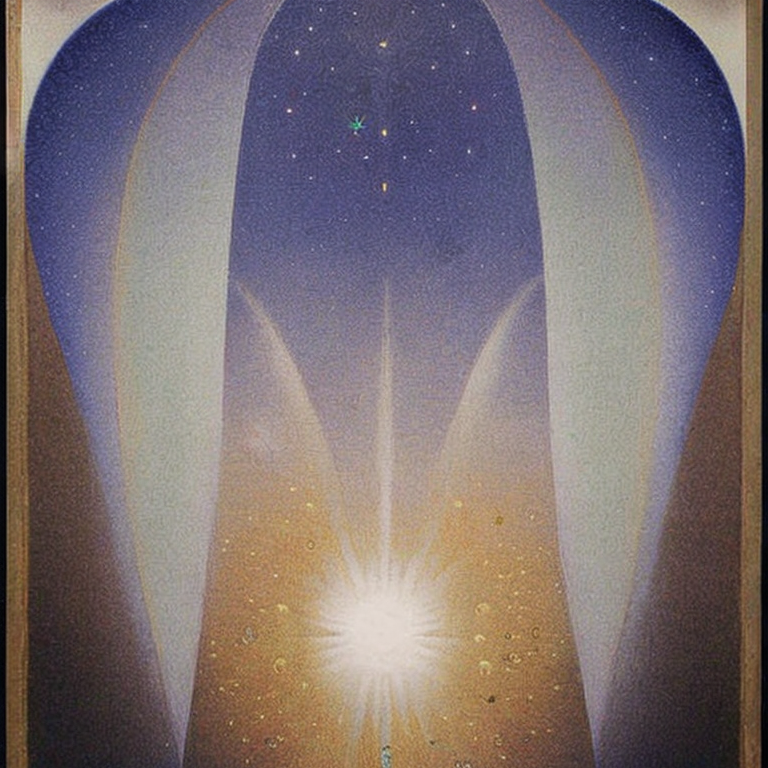
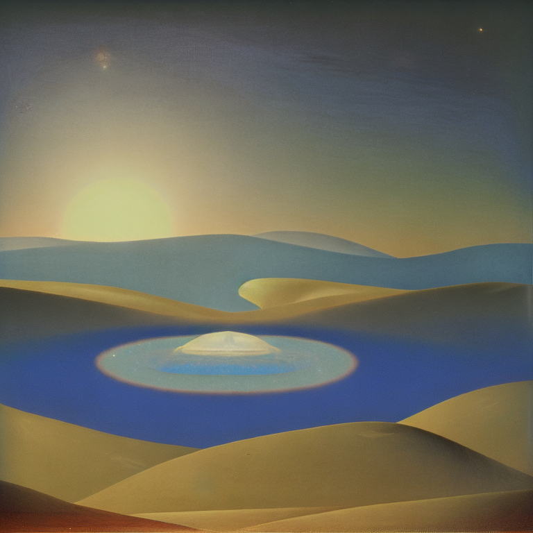
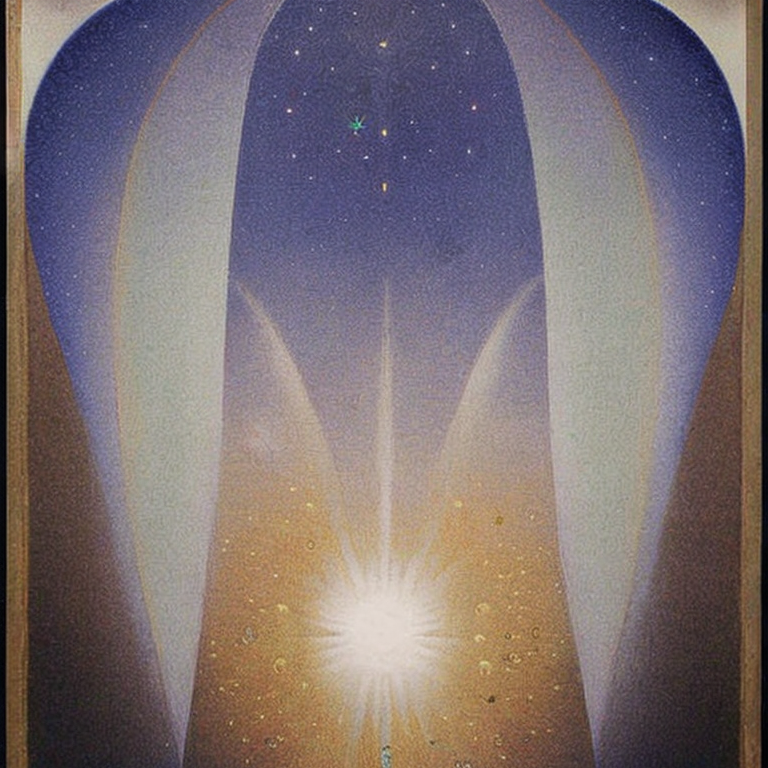
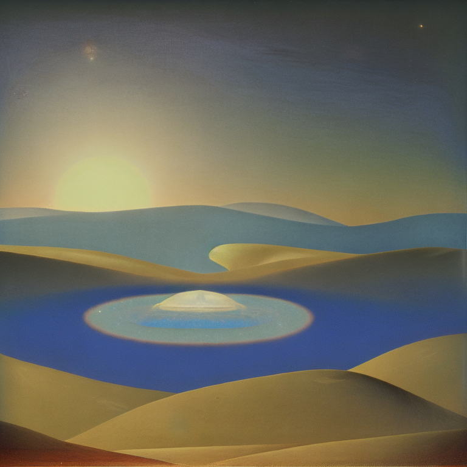
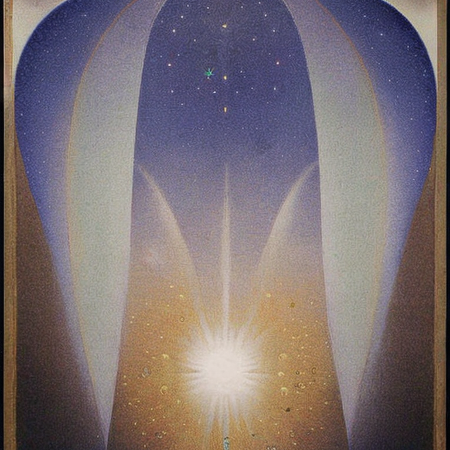
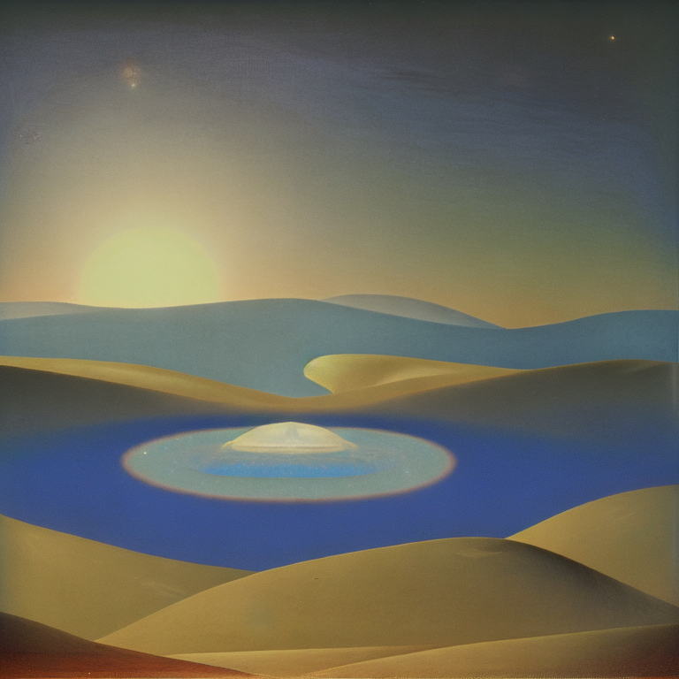

This model was an experiment in the effects of training on input artworks from a deceased artist, in this case paintings by produced by the mid-century American transcendentalist oil painter Agnes Pelton featured in the 2023 exhibition Another World which was visited by a group of collaborating Recurse Center alumni. This training was created for non-commercial purposes and no ownership is claimed over the output images.
model documentation


more images available on discord